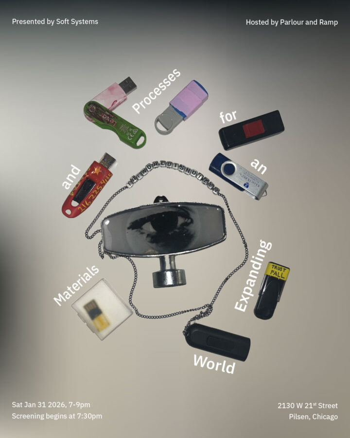

Materials and Processes for an Expanding World
Soft Systems presents a video screening of Materials and Processes for an Expanding World. The screening will take place January 31, 2026, from 7–9 p.m., hosted by Parlour and Ramp in Chicago. The program brings together nine video works from the original exhibition in Los Angeles, which invited contributors to mail small, unfinished works, including video submitted on USB drives.
The original group exhibition featured works on paper, ephemera, and video by 37 artists and was held from December 11-13, 2025, hosted by Plot in Los Angeles. Building on traditions of mail art, Materials and Processes for an Expanding World reflects the ways artists create their own universes through movement, experiment, and intentional accidents, with an emphasis on unfinished and process-based work across all contributions.
Video works by:
TAITAIxTina, Leah Sandler, Zoey Solomon, Noelle Whitaker, Vanessa Norton, Hypothetical Star, Wonderful Cringe, Anabelle Lee Dehm, Parham Ghalamdar.